Addon description
Launch the Rational Production software.
- To start working, load the required layout.
- The layout must contain the component «MoCap Operator (Name)», which can be found in the electronic catalog «PM MoCap» (Fig. 1).
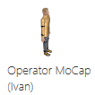
Figure 1 – MoCap operator in the electronic catalog
- Using the «MoCap» addon, the necessary animations for the operator are loaded.
- In the «Program» tab, find the «Ergonomics» section, select the «Ergonomics» tool (Fig. 2) (Fig. 3).
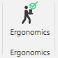
Figure 2 – New Ergonomics section in the «Program» tab
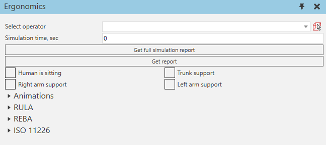
Figure 3 – Tool appearance
- Next, you need to select the operator. You can select it using the drop-down list or from the layout (Fig. 3).
- The «Get full simulation report» button allows you to run simulations and display a report on all ergonomics study methods.
- The «Get report» button allows you to display a report on all ergonomics study methods for the current operator posture.
- During the simulation, supports of various body parts are used for ergonomics analysis - the torso, the right hand, the left hand, you can also set that the operator is sitting. To obtain an analysis of the current pose, you need to manually set the current input data - supports. The following section "Animations" is used to analyze the simulation.
- The "Animations" section is designed to analyze the downloaded animations from the "MoCap" add-on (Fig. 5). In this section, you can set the input parameters of various supports. The downloaded animations have a certain number of frames, 24 frames equal 1 second of animation. The added supports can be viewed in the program editor, they are added as comments. To add support to the desired frame in the desired place, you can use the program editor. When clicking on PTP, the operator will change the pose. During simulation, the current pose is determined by the green circle - the current pose corresponds to the previous PTP from the green circle in the executable subroutine.
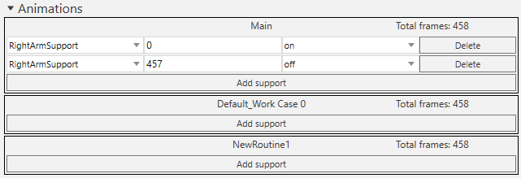
Figure 4 – Tool appearance (Animations)
- The «RULA» section is designed to display the results of the operator's posture assessment using the RULA method (Fig. 5).
- «Get simulation report» is needed to obtain the result using the selected method.
- After selecting the operator, the RULA section displays data on the person's posture.
- Next, the load level is selected, as well as the level of physical work (non-exacting, static or repetitive - more than 4 times in 10 minutes). There is also a choice of whether the person is sitting.
- For different limbs, parameters with angle values, as well as with point values, are displayed.
- There are also intermediate final parameters with point values.
- The final result of the posture assessment is displayed at the very beginning of the section.
Result |
Description |
1-2 |
Low risk - no action required |
3-4 |
Low risk - changes may be required |
5-6 |
Medium risk - vigilance, improvements to consider |
6+ |
High risk - immediate response required |
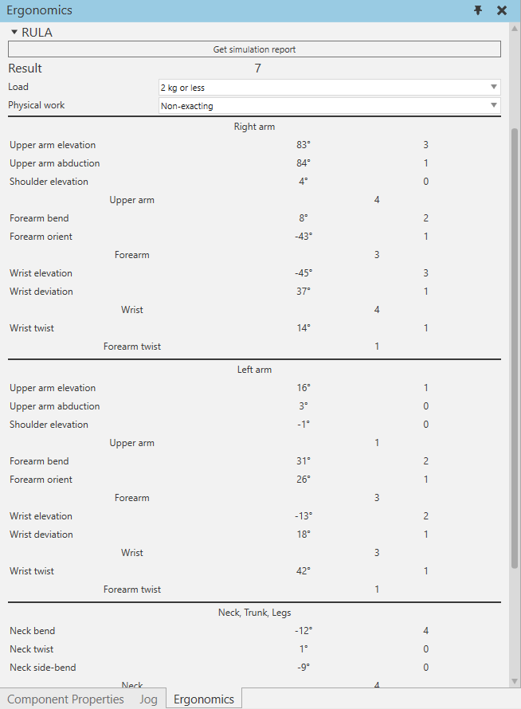
Figure 5 – Tool appearance (RULA) after selecting the operator
- The «REBA» section is designed to display the results of the operator's posture assessment using the REBA method (Fig. 6).
- «Get simulation report» is needed to obtain the result using the selected method.
- After selecting the operator, the REBA section displays data on the person's posture.
- Next, select the load level, effort, hand grip, and activity. There is also a choice of whether the person is sitting.
- For different limbs, parameters with angle values and point values are displayed.
- There are also intermediate final parameters with point values.
- The final result of the posture assessment is displayed at the very beginning of the section.
Result |
Description |
1 |
Low risk - no action required. |
2-3 |
Low risk - changes may be required. |
4-7 |
Medium risk - vigilance, improvements to be considered. |
8-10 |
High risk - improvements needed. |
+11 |
Very high risk - immediate response. |
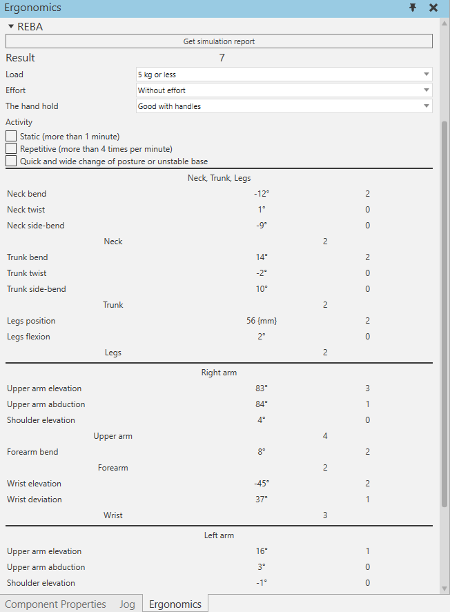
Figure 6 – Tool appearance (REBA) after selecting the operator
- The «ISO 11226» section is designed to display the results of operator posture assessment using the ISO 11226 method (Fig. 7).
- «Get simulation report» is needed to obtain the result using the selected method.
- To obtain the result, you must click the «Get full simulation report» or «Get simulation report» button.
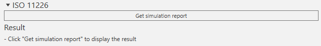
Figure 7 – Tool appearance (ISO 11226) after selecting the operator
- The “Get full simulation report” and “Get simulation report” buttons start the simulation for the selected simulation time (if 0, the simulation will run indefinitely) and when it is stopped or reset, it displays a graph of the pose assessment for the entire simulation period (Fig. 8, 9, 10).
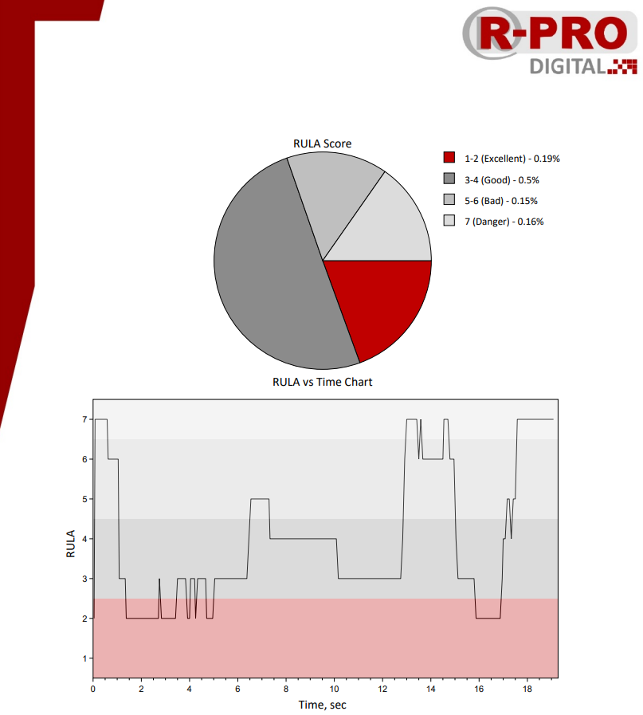
Figure 8 – Example of a simulation report (RULA)
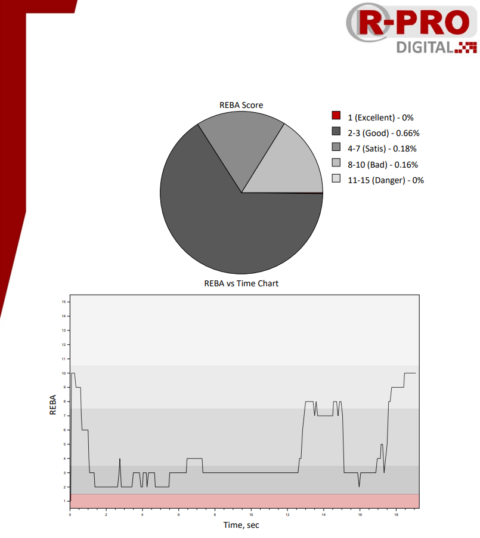
Figure 9 – Example of a simulation report (REBA)
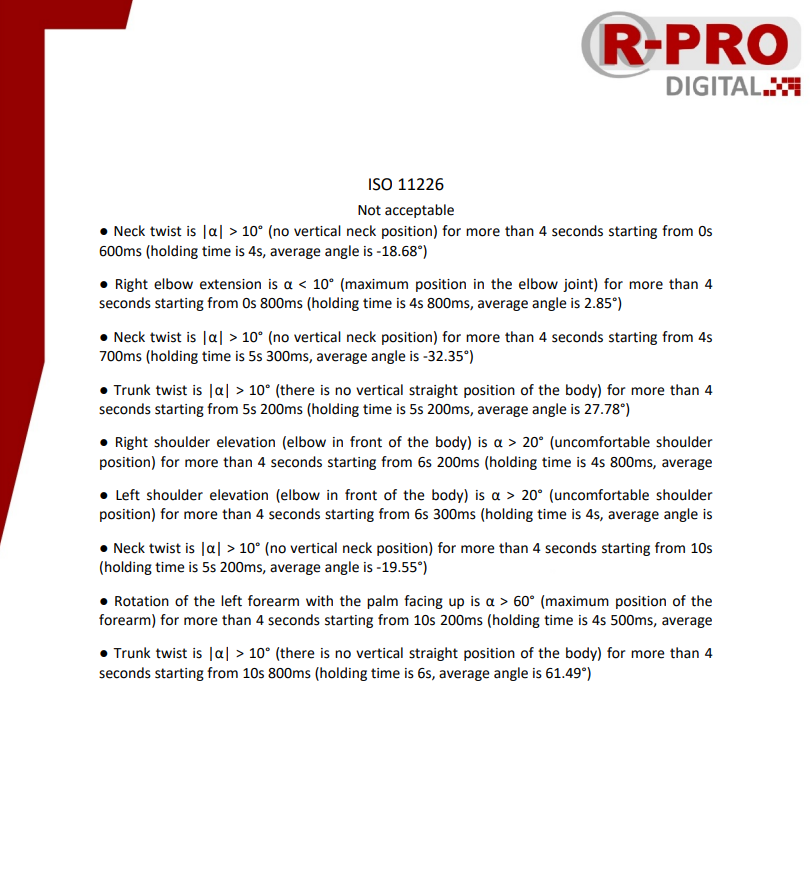
Figure 10 – Example of a simulation report (ISO 11226)
- The «Get report» button gives the result, which is presented on the tool itself, evaluates the current pose at the given moment in time. The report contains a more detailed description of the final assessment (Fig. 11 - 14).
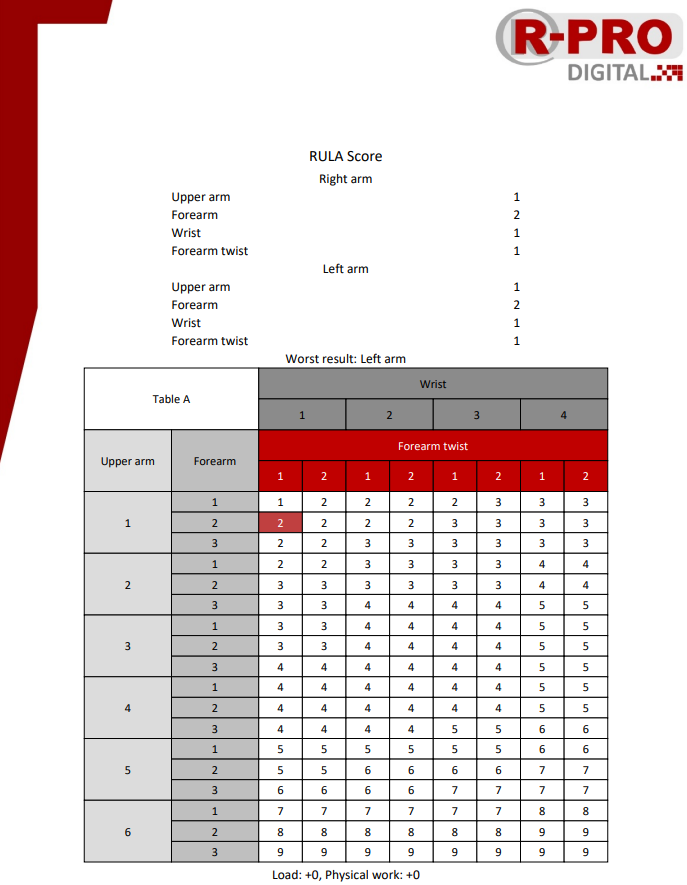
Figure 11 – Example of report (RULA)
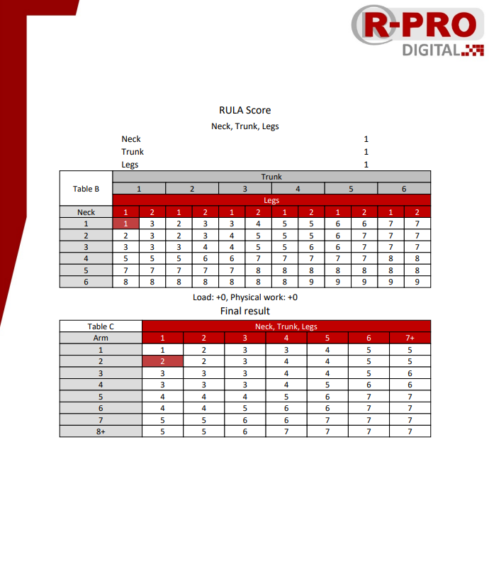
Figure 12 – Example of report (RULA)
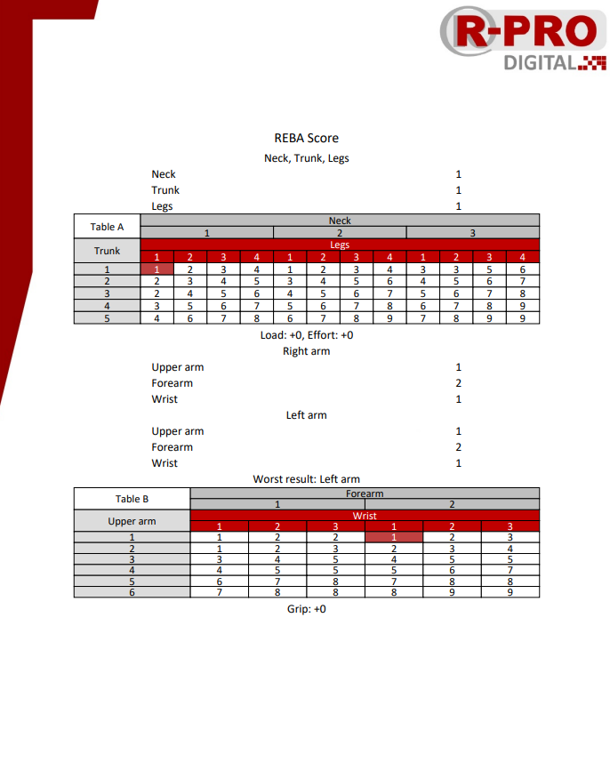
Figure 13 – Example of report (REBA)
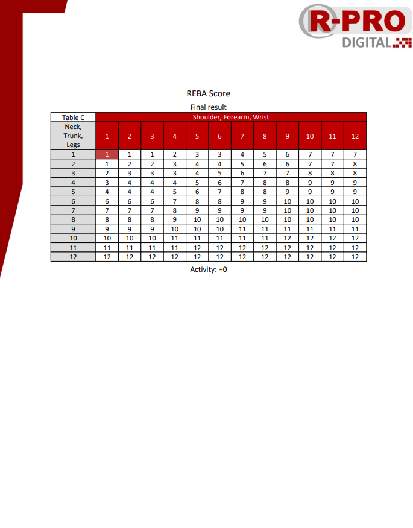
Figure 14 – Example of report (REBA)